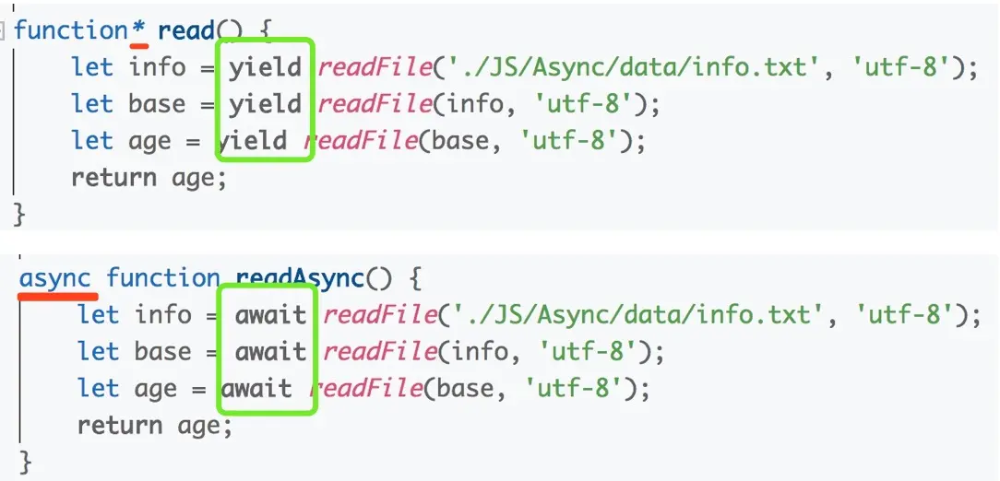
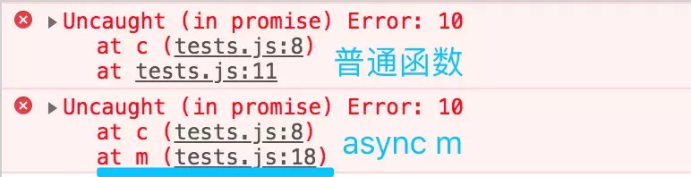

# js 相关面试题
# 前言
本人平时学习及收集内容，欢迎参入一起讨论。
# 内容
- 基本类型有哪几种？null 是对象吗？基本数据类型和复杂数据类型存储有什么区别？
- typeof 是否正确判断类型? instanceof 呢？ instanceof 的实现原理是什么？
- for of , for in 和 forEach,map 的区别。
- 如何判断一个变量是不是数组？
- 类数组和数组的区别是什么？
- == 和 === 有什么区别？
- [] == ![]
- ES6 中的 class 和 ES5 的类有什么区别？
- 数组的哪些 API 会改变原数组？
- let、const 以及 var 的区别是什么？
- 在 JS 中什么是变量提升？什么是暂时性死区？
- 如何正确的判断 this? 箭头函数的 this 是什么？
- 词法作用域和 this 的区别。
- 谈谈你对 JS 执行上下文栈和作用域链的理解。
- 什么是闭包？闭包的作用是什么？闭包有哪些使用场景？
- call、apply 有什么区别？call,aplly 和 bind 的内部是如何实现的？
- new 的原理是什么？通过 new 的方式创建对象和通过字面量创建有什么区别？
- 谈谈你对原型的理解？
- 什么是原型链？【原型链解决的是什么问题？】
- prototype 和
__proto__区别是什么？ - 使用 ES5 实现一个继承？
- 什么是深拷贝？深拷贝和浅拷贝有什么区别？
- 防抖和节流的区别是什么？防抖和节流的实现。
- 取数组的最大值（ES5、ES6）
- ES6 新的特性有哪些？
- setTimeout 倒计时为什么会出现误差？
- 为什么 0.1 + 0.2 != 0.3 ?
- promise 有几种状态, Promise 有什么优缺点 ?
- Promise 构造函数是同步还是异步执行，then 中的方法呢 ?promise 如何实现 then 处理 ?
- Promise 和 setTimeout 的区别 ?
- 如何实现 Promise.all ?
- 如何实现 Promise.finally ?
- 什么是函数柯里化？实现 sum(1)(2)(3) 返回结果是 1,2,3 之和
- 说一说 JS 异步发展史
- 谈谈对 async/await 的理解，async/await 的实现原理是什么?
- 使用 async/await 需要注意什么？
- 如何实现 Promise.race？
- 可遍历数据结构的有什么特点？
- requestAnimationFrame 和 setTimeout/setInterval 有什么区别？使用 requestAnimationFrame 有哪些好处？
- JS 类型转换的规则是什么？
- 简述下对 webWorker 的理解？
- ES6 模块和 CommonJS 模块的差异？
- 浏览器事件代理机制的原理是什么？
- js 如何自定义事件？
- 跨域的方法有哪些？原理是什么？
- js 异步加载的方式有哪些？
- 下面代码 a 在什么情况中打印出 1？
- 下面这段代码的输出是什么？
- 实现双向绑定 Proxy 与 Object.defineProperty 相比优劣如何?
- Object.is() 与比较操作符 ===、== 有什么区别？
- 什么是事件循环？Node 事件循环和 JS 事件循环的差异是什么？
# 1.基本类型有哪几种？null 是对象吗？基本数据类型和复杂数据类型存储有什么区别？
- 基本类型有 6 种，分别是 undefined,null,bool,string,number,symbol(ES6 新增)。
- 虽然 typeof null 返回的值是 object,但是 null 不是对象，而是基本数据类型的一种。
- 基本数据类型存储在栈内存，存储的是值。
- 复杂数据类型的值存储在堆内存，地址（指向堆中的值）存储在栈内存。当我们把对象赋值给另外一个变量的时候，复制的是地址，指向同一块内存空间，当其中一个对象改变时，另一个对象也会变化。
# 2.typeof 是否正确判断类型? instanceof 呢？ instanceof 的实现原理是什么？
首先 typeof 能够正确的判断基本数据类型，但是除了 null, typeof null 输出的是对象。 但是对象来说，typeof 不能正确的判断其类型， typeof 一个函数可以输出 'function',而除此之外，输出的全是 object,这种情况下，我们无法准确的知道对象的类型。
instanceof 可以准确的判断复杂数据类型，但是不能正确判断基本数据类型。
instanceof 是通过原型链判断的，A instanceof B, 在 A 的原型链中层层查找，是否有原型等于 B.prototype，如果一直找到 A 的原型链的顶端(null;即 Object.__proto__.__proto__),仍然不等于 B.prototype，那么返回 false，否则返回 true.
// L instanceof R
function instance_of(L, R) {//L 表示左表达式，R 表示右表达式
var O = R.prototype;// 取 R 的显式原型
L = L.__proto__; // 取 L 的隐式原型
while (true) {
if (L === null) //已经找到顶层
return false;
if (O === L) //当 O 严格等于 L 时，返回 true
return true;
L = L.__proto__; //继续向上一层原型链查找
}
}
2
3
4
5
6
7
8
9
10
11
12
13
# 3.for of , for in 和 forEach,map 的区别。
- for...of 循环：具有 iterator 接口，就可以用 for...of 循环遍历它的成员(属性值)。for...of 循环可以使用的范围包括数组、Set 和 Map 结构、某些类似数组的对象、Generator 对象，以及字符串。for...of 循环调用遍历器接口，数组的遍历器接口只返回具有数字索引的属性。对于普通的对象，for...of 结构不能直接使用，会报错，必须部署了 Iterator 接口后才能使用。可以中断循环。
- for...in 循环：遍历对象自身的和继承的可枚举的属性, 不能直接获取属性值。可以中断循环。
- forEach: 只能遍历数组，不能中断，没有返回值(或认为返回值是 undefined)。
- map: 只能遍历数组，不能中断，返回值是修改后的数组。
# 4.如何判断一个变量是不是数组？
- 使用 Array.isArray 判断，如果返回 true, 说明是数组
- 使用 instanceof Array 判断，如果返回 true, 说明是数组
- 使用 Object.prototype.toString.call 判断，如果值是 [object Array], 说明是数组
- 通过 constructor 来判断，如果是数组，那么
arr.constructor === Array. (不准确，因为我们可以指定obj.constructor = Array)
# 5.类数组和数组的区别是什么？
- 拥有 length 属性，其它属性（索引）为非负整数（对象中的索引会被当做字符串来处理）;
- 不具有数组所具有的方法；
类数组是一个普通对象，而真实的数组是 Array 类型。
常见的类数组有: 函数的参数 arguments, DOM 对象列表(比如通过 document.querySelectorAll 得到的列表), jQuery 对象 (比如 $("div")).
任何定义了遍历器（Iterator）接口的对象，都可以用扩展运算符转为真正的数组。
Array.from 方法用于将两类对象转为真正的数组：类似数组的对象（array-like object）和可遍历（iterable）的对象。
# 6.== 和 === 有什么区别？
=== 不需要进行类型转换，只有类型相同并且值相等时，才返回 true.
== 如果两者类型不同，首先需要进行类型转换。具体流程如下:
- 首先判断两者类型是否相同，如果相等，判断值是否相等.
- 如果类型不同，进行类型转换
- 判断比较的是否是 null 或者是 undefined, 如果是, 返回 true .
- 判断两者类型是否为 string 和 number, 如果是, 将字符串转换成 number
- 判断其中一方是否为 boolean, 如果是, 将 boolean 转为 number 再进行判断
- 判断其中一方是否为 object 且另一方为 string、number 或者 symbol , 如果是, 将 object 转为原始类型再进行判断
# 思考：.[] == ![]
我们来分析一下: [] == ![]是 true 还是 false？
- 首先，我们需要知道 ! 优先级是高于 == (更多运算符优先级可查看: 运算符优先级)
![]引用类型转换成布尔值都是 true,因此![]的是 false- 根据上面的比较步骤中的第五条，其中一方是 boolean，将 boolean 转为 number 再进行判断，false 转换成 number，对应的值是 0.
- 根据上面比较步骤中的第六条，有一方是 number，那么将 object 也转换成 Number,空数组转换成数字，对应的值是 0.(空数组转换成数字，对应的值是 0，如果数组中只有一个数字，那么转成 number 就是这个数字，其它情况，均为 NaN)
- 0 == 0; 为 true
# 8.ES6 中的 class 和 ES5 的类有什么区别？
- ES6 class 内部所有定义的方法都是不可枚举的；
- ES6 class 必须使用 new 调用；
- ES6 class 不存在变量提升；
- ES6 class 默认即是严格模式；
- ES6 class 子类必须在父类的构造函数中调用 super()，这样才有 this 对象；ES5 中类继承的关系是相反的，先有子类的 this，然后用父类的方法应用在 this 上。
# 9.数组的哪些 API 会改变原数组？
修改原数组的 API 有:
splice/reverse/fill/copyWithin/sort/push/pop/unshift/shift
不修改原数组的 API 有:
slice/map/forEach/every/filter/reduce/entries/find/concat
注: 数组的每一项是简单数据类型，且未直接操作数组的情况下(稍后会对此题重新作答)。
# 10.let、const 以及 var 的区别是什么？
- let 和 const 定义的变量不会出现变量提升，而 var 定义的变量会提升。
- let 和 const 是 JS 中的块级作用域
- let 和 const 不允许重复声明(会抛出错误)
- let 和 const 定义的变量在定义语句之前，如果使用会抛出错误(形成了暂时性死区)，而 var 不会。
- const 声明一个只读的常量。一旦声明，常量的值就不能改变(如果声明是一个对象，那么不能改变的是对象的引用地址)
# 11.在 JS 中什么是变量提升？什么是暂时性死区？
变量提升就是变量在声明之前就可以使用，值为 undefined。
在代码块内，使用 let/const 命令声明变量之前，该变量都是不可用的(会抛出错误)。这在语法上，称为“暂时性死区”。暂时性死区也意味着 typeof 不再是一个百分安全的操作。
typeof x; // ReferenceError(暂时性死区，抛错)
let x;
2
3
暂时性死区的本质就是，只要一进入当前作用域，所要使用的变量就已经存在了，但是不可获取，只有等到声明变量的那一行代码出现，才可以获取和使用该变量。
# 12.如何正确的判断 this? 箭头函数的 this 是什么？
this 的绑定规则有四种：默认绑定，隐匿绑定，显式绑定，new 绑定
- 函数是否在 new 中调用(new 绑定)，如果是，那么 this 绑定的是新创建的对象【前提是构造函数中没有返回对象或者 function，否则 this 指向返回的对象/function】
- 函数是否通过 call,apply 调用，或者使用了 bind (即硬绑定)，如果是，那么 this 绑定的就是指定的对象。
- 函数是否在某个上下文对象中调用(隐式绑定)，如果是的话，this 绑定的是那个上下文对象。一般是 obj.foo()
- 如果以上都不是，那么使用默认绑定。如果在严格模式下，则绑定到 undefined，否则绑定到全局对象。
- 如果把 null 或者 undefined 作为 this 的绑定对象传入 call、apply 或者 bind, 这些值在调用时会被忽略，实际应用的是默认绑定规则。
- 箭头函数没有自己的 this, 它的 this 继承于上一层代码块的 this。
如果 this 的知识点，您还不太懂，请戳: this 理解
# 13.词法作用域和 this 的区别。
- 词法作用域是由你在写代码时将变量和块作用域写在哪里来决定的
- this 是在调用时被绑定的，this 指向什么，完全取决于函数的调用位置(关于 this 的指向问题，本文已经有说明)
# 14.谈谈你对 JS 执行上下文栈和作用域链的理解。
执行上下文就是当前 JavaScript 代码被解析和执行时所在环境, JS 执行上下文栈可以认为是一个存储函数调用的栈结构，遵循先进后出的原则。
- JavaScript 执行在单线程上，所有的代码都是排队执行。
- 一开始浏览器执行全局的代码时，首先创建全局的执行上下文，压入执行栈的顶部。
- 每当进入一个函数的执行就会创建函数的执行上下文，并且把它压入执行栈的顶部。当前函数执行-完成后，当前函数的执行上下文出栈，并等待垃圾回收。
- 浏览器的 JS 执行引擎总是访问栈顶的执行上下文。
- 全局上下文只有唯一的一个，它在浏览器关闭时出栈。
作用域链：无论是 LHS 还是 RHS 查询，都会在当前的作用域开始查找，如果没有找到，就会向上级作用域继续查找目标标识符，每次上升一个作用域，一直到全局作用域为止。
如果执行上下文及上下文栈不理解的话，请戳执行上下文
# 15.什么是闭包？闭包的作用是什么？闭包有哪些使用场景？
闭包是指有权访问另一个函数作用域中的变量的函数，创建闭包最常用的方式就是在一个函数内部创建另一个函数。
闭包的作用有:
- 封装私有变量
- 模仿块级作用域(ES5 中没有块级作用域)
- 实现 JS 的模块
如果闭包不理解的话，请戳闭包
# 16.call、apply 有什么区别？call,aplly 和 bind 的内部是如何实现的？
请戳以下两个链接：
# 17.new 的原理是什么？通过 new 的方式创建对象和通过字面量创建有什么区别？
请戳链接：new 模拟实现
# 18.谈谈你对原型的理解？
请戳链接：原型与原型链
# 19.什么是原型链？【原型链解决的是什么问题？】
# 20.prototype 和 __proto__ 区别是什么？
# 21.使用 ES5 实现一个继承？
请戳链接：继承
# 22.什么是深拷贝？深拷贝和浅拷贝有什么区别？
请戳链接：JS 的浅拷贝与深拷贝
# 23.防抖和节流的区别是什么？防抖和节流的实现。
请戳链接：节流与防抖动
# 24.取数组的最大值（ES5、ES6）
// ES5 的写法
Math.max.apply(null,[14,3,77,30]);
// ES6 的写法
Math.max(...[14,3,77,30]);
// reduce
[14,3,77,30].reduce((accumulator,currentValue){
return accumulator = accumulator > currentValue ? accumulator : currentValue
})
2
3
4
5
6
7
8
9
10
# 25.ES6 新的特性有哪些？
- 新增了块级作用域(let,const)
- 提供了定义类的语法糖(class)
- 新增了一种基本数据类型(Symbol)
- 新增了变量的解构赋值
- 函数参数允许设置默认值，引入了 rest 参数，新增了箭头函数
- 数组新增了一些 API，如 isArray/from/of 方法，数组实例新增了 entries()，keys()和 values()等方法
- 对象和数组新增了扩展运算符
- ES6 新增了模块化(import/export)
- ES6 新增了 Set 和 Map 数组结构
- ES6 原生提供了 Proxy 构造函数，用来生成 Proxy 实例
- ES6 新增了生成器(Generator)和遍历器(Iterator)
# 26.setTimeout 倒计时为什么会出现误差？
setTimeout()只是将事件插入了“任务队列”，必须等当前代码（执行栈）执行完，主线程才会去执行它指定的回调函数。要是当前代码消耗时间很长，也有可能要等很久。所以并没办法保证回调函数一定会在 setTimeout()指定的时间执行。所以，setTimeout 的第二个参数表示的是最少时间，并非是确切时间。
# 27.为什么 0.1 + 0.2 != 0.3 ?
# 28.promise 有几种状态, Promise 有什么优缺点 ?
promise 有三种状态：fulfilled,rejected,pending.
Promise 的优点：
# 29.Promise 构造函数是同步还是异步执行，then 中的方法呢 ?promise 如何实现 then 处理 ?
Promise 的构造函数是同步执行的。then 中的方法是异步的。promise 的 then 实现，详见Promise 对象
# 30.Promise 和 setTimeout 的区别 ?
Promise 是微任务，setTimeout 是宏任务，同一个事件循环中，promise.then 总是先于 setTimeout 执行。
# 31.如何实现 Promise.all ?
要实现 Promise.all 首先我们需要知道 Promise.all 的功能：
- 如果传入的参数是一个空的可迭代对象，那么
- 如果传入的参数不包含任何 promise，则返回一个异步完成.promises 中所有的 promise 都
- 如果参数中有一个 promise 失败，那么 Promise.all 返回的 promise 对象失败
- 在任何情况下，Promise.all 返回的 promise 的完成状态的结果都是一个数组
Promise.all = function(promise){
return new Promise((resolve,reject)=>{
let index = 0;
let result = [];
if(promise.length === 0){
resolve(result);
}else{
function processValue(i,data){
result[i] = data;
if(++index === promises.length){
resolve(result);
}
}
for(let i =0; i<promises.length;i++){
// promises[i] 可能是普通值
Promise.resolve(promise[i]).then((data)=>{
processValue(i,data);
},(err)=>{
reject(err);
return;
})
}
}
})
}
2
3
4
5
6
7
8
9
10
11
12
13
14
15
16
17
18
19
20
21
22
23
24
25
# 32.如何实现 Promise.finally ?
不管成功还是失败，都会走到 finally 中，并且 finally 之后，还可以继续 then，并且将值原封不动的传递给后面的 then.
Promise.prototype.finally = function (callback){
return this.then((value)=>{
reutrn Promise.resolve(callback()).then(()=>{
return value;
})
},(err)=>{
return Promise.resolve(callback()).then(()=>{
throw err;
})
})
}
2
3
4
5
6
7
8
9
10
11
# 33.什么是函数柯里化？实现 sum(1)(2)(3) 返回结果是 1,2,3 之和
# 34.说一说 JS 异步发展史
异步最早的解决方案是回调函数，如果事件的回调，setInterval/setTimeout 中的回调。但是回调函数有一个很常见的问题，就是回调地狱的问题；
为了解决回调地铁的问题，社区提出了 Promise 解决方案，ES6 将其写进了语言标准。Promise 解决了回调地狱的问题，但是 Promise 也存在一些问题，如错误不能被 try catch，而且使用 Promise 的链式调用，其实并没有从根本上解决回调地狱的问题，只是换了一种写法。
ES6 中引入了 Generator 函数，Generator 是一种异步编程解决方案，Generator 函数是协程在 ES6 的实现最大特点就是可以交出函数的执行权，Generator 函数可以看出是异步任务的容器，需要暂停的地方，都用 yield 语句注明。但是 Generator 使用起来较为复杂。
# 35.谈谈对 async/await 的理解，async/await 的实现原理是什么?
async/await 就是 Generator 的语法糖，使得异步操作变得更加方便。来张图对比一下：

async 函数就是将 Genterator 函数的星号（*）替换成 async，将 yield 替换成 await。
我们说 async 是 Generator 的语法糖，那么这个糖究竟甜在哪呢？
- async 函数内置执行器，函数调用之后，会自动执行，输出最后结果。而 Generator 需要调用 next 或者配合 co 模块使用。
- 更好的语义，async 和 await，比如星号和 yield，语义更清楚了。async 表示函数里有异步操作，await 表示紧跟在后面的表达式需要等待结果。
# 36.使用 async/await 需要注意什么？
- await 命令后面的 Promise 对象，运行结果可能是 rejected，此时等同于 async 函数返回的 Promise 对象被 reject，因此需要加上错误处理，可以给每个 await 后的 Promise 增加 catch 方法；也可以将 await 的代码放在
try...catch中。 - 多个 await 命令后面的异步操作，如果不存在继发关系，最好让它们同时触发。
// 下面两种写法都可以同时触发
// 方法一
async function f1(){
await Promise.all([
new Promise((resolve)=>{
setTimeout(resolve,600);
}),
new Promise((resolve)=>{
setTimeout(resolve,600)
})
])
}
// 方法二
async function f2(){
let fn1 = new Promise((resolve)=>{
setTimeout(resolve,800)
});
let fn2 = new Promise((resolve)=>{
setTimeout(resolve,800);
});
await fn1;
await fn2;
}
2
3
4
5
6
7
8
9
10
11
12
13
14
15
16
17
18
19
20
21
22
23
24
25
- await 命令只能用在 async 函数之中，如果用在普通函数，会报错。
- async 函数可以保留运行堆栈。
/**
* 函数a内部运行了一异步任务b()。当b()运行的时候，函数a()不会中断，而是继续执行。
* 等到b() 运行结束，可能a()早就运行结束了，b()所在上下文环境已经消失了。
* 如果b()或c()报错，错误堆栈将不包括a()。
*/
function b(){
return new Promise((resolve,reject)=>{
setTimeout(resolve,200)
});
}
function c(){
throw Error(10);
}
const a = ()=>{
b().then(()=>c);
}
a();
/**
* 改成async函数
*/
const m = async()=>{
await b();
c();
};
m();
2
3
4
5
6
7
8
9
10
11
12
13
14
15
16
17
18
19
20
21
22
23
24
25
报错信息如下，可以看出 async 函数可以保留运行堆栈。

# 37.如何实现 Promise.race？
在代码实现前，我们需要先了解 Promise.race 的特点：
- Promise.race 返回的仍然是一个 Promise。它的状态与第一个完成的 Promise 的状态相同。它可以是完成（resolve），也可以是失败（rejects），这个取决于第一个 Promise 是哪一种状态。
- 如果传入的参数是不可迭代的，那么将会抛出错误。
- 如果传的参数数组是空，那么返回的 promise 将永远等待。
- 如果迭代包含一个或多个非承诺值或已解决/拒绝的承诺，则 Promise.race 将解析为迭代中找到的第一个值。
Promise.race = function(promise){
// promise 必须是一个可遍历的数组结构，否则抛错
return new Promise((resolve,reject)=>{
if(typeof promises[Symbol.iterator] !=='function'){
// 真实不是这个错误
Promise.reject('args is not iteratable!');
}
if(promises.length===0){
return;
}else{
for(let i=0;i<promises.length;i++){
Promise.resolve(promises[i]).then((data)=>{
resolve(data);
return;
},(err)=>{
reject(err);
return;
})
}
}
});
}
2
3
4
5
6
7
8
9
10
11
12
13
14
15
16
17
18
19
20
21
22
测试代码：
// 一直在等待态
Promise.race([]).then((data)=>{
console.log('success',data);
},(err)=>{
console.log('err',err);
});
// 抛错
Promise.race().then((data)=>{
console.log('success',data);
},(err)=>{
console.log('err',err);
});
Promise.race([
new Promise((resolve,reject)=>{
setTimeout(()=>{resolve(100)},1000)
}),
new Promise((resolve,reject)=>{
setTimeout(()=>{resolve(200)},200)
}),
new Promise((resolve,reject)=>{
setTimeout(()=>{reject(100)},100)
})
]).then((data){
console.log(data);
},(err)=>{
console.log(err);
})
2
3
4
5
6
7
8
9
10
11
12
13
14
15
16
17
18
19
20
21
22
23
24
25
26
27
28
29
# 38.可遍历数据结构的有什么特点？
一个对象如果要具备可被 for...of 循环调用的 Iterator 接口，就必须在其 Symbol.iterator 的属性上部署遍历器生成方法(或者原型链上的对象具有该方法)
PS: 遍历器根本特征就是具有 next 方法。每次调用 next 方法，都会返回一个代表当前成员的信息对象，具有 value 和 done 两个属性。
// 如为对象添加Iterator接口；
let obj = {
name:'Yvette',
age: 18,
job: 'engineer',
[Symbol.iterator](){
const self = this;
const keys = Object.keys(self);
let self = this;
const keys = Object.keys(self);
let index = 0;
return {
next(){
if(index < keys.length){
return {
value: self[keys[index++]],
done:false
}
}else{
return { value:undefined,done:true};
}
}
}
}
}
for(let item of obj){
console.log(item); // Yvette 18 engineer
}
2
3
4
5
6
7
8
9
10
11
12
13
14
15
16
17
18
19
20
21
22
23
24
25
26
27
28
29
使用 Generator 函数()简写 Symbol.iterator 方法，可以简写如下：
let obj = {
name: 'Yvette',
age: 18,
job: 'engineer',
* [Symbol.iterator] () {
const self = this;
const keys = Object.keys(self);
for (let index=0;index<keys.length;index++){
yield self[keys[index]]; // yield 表达式仅能使用在Generator函数中
}
}
}
2
3
4
5
6
7
8
9
10
11
12
# 原生具备 Iterator 接口的数据结构如下
- Array
- Map
- Set
- String
- TypedArray
- 函数的 arguments 对象
- NodeList 对象
- ES6 的数组、Set、Map 都部署了以下三个方法：entries()/keys()/values()，调用后都返回遍历器对象
# 39.requestAnimationFrame 和 setTimeout/setInterval 有什么区别？使用 requestAnimationFrame 有哪些好处？
在 requestAnimationFrame 之前，我们主要使用 setTimeout/setInterval 来编写 JS 动画。
编写动画的关键是循环间隔的设置，一方面，循环间隔足够短，动画效果才能显得平滑流畅；另一方面，循环间隔还要足够长，才能确保浏览器有能力沉浸产生变化 。
大部分的电脑显示器的刷新频率是 60HZ，也就是每秒钟重绘 60 次。大多数浏览器都会对重绘操作加以限制，不走过显示器的重绘频率，因为即使超过那个频率用户体验也不会提升。因此，最平滑动画的最佳循环间隔是 1000ms/60，约为 16.7ms。
setTimeout/setInterval 有一个显著的缺陷在于时间不是精确的，setTimeout/setInterval 只能保证延时或间隔不小于设定的时间。因为它们实际上只是把任务添加到任务队列中，但是如果前面的任务还没有执行完成。它们必须要等待。
requestAnmationFrame 才有的是系统时间间隔，保持最佳绘制效率，不会因为间隔时间过短，千万过度绘制，增加开销；也不会因为间隔时间太长，使用动画卡顿不流畅，让各种网页动画效果能够有一个统一的刷新机制，从而节省系统资源，提高系统性能，改善视觉效果。
综上所述，requestAnmationFrame 和 setTimeout/setInterval 在编写动画时相对，优点如下：
- requestAnimationFrame 不需要设置时间，采用系统时间间隔，能达到最佳的动画效果。
- requestAnimationFrame 会把每一帧中的所有 DOM 操作集中起来，再一次重绘或回流中就完成。
- 当 requestAnimationFrame()运行在后台标签页或者隐藏的
<iframe>里时，requestAnimationFrame()会被暂停调用以提升性能和电池寿命（大多数浏览器中）。
# 40.JS 类型转换的规则是什么？
请戳链接：JS 数据类型与数据类型转换
# 41.简述下对 webWorker 的理解？
HTML5 则提出了 Web Worker 标准，表示 js 允许多线程，但是子线程完全受主线程控制并且不能操作 dom，只有主线程可以操作 dom，所以 js 本质上依然是单线程语言。
web worker 就是在 js 单线程执行的基础上开启一个子线程，进行程序处理，而不影响主线程的执行，当子线程执行完之后再回到主线程上，在这个过程中不影响主线程的执行。子线程与主线程之间提供了数据交互的接口 postMessage 和 onmessage，来进行数据发送和接收。
var worker = new Worker('./worker.js'); // 创建一个子线程
worker.postMessage('Hello');
worker.onmessage = function(e){
console.log(e.data); // Hi
worker.terminate(); // 结束线程
};
2
3
4
5
6
// worker.js
onmessage = function(e){
console.log(e.data); // Hello
postMessage('Hi');
}
2
3
4
5
请戳链接：web work 学习
# 42.ES6 模块和 CommonJS 模块的差异？
请戳链接：js 模块化
# 43.浏览器事件代理机制的原理是什么？
请戳链接：js 事件
# 44.js 如何自定义事件？
自定义 DOM 事件(不考虑 IE9 之前版本)
自定义事件有三种方式，一种是使用new Event()，另一种是createEvent('CustomEvent')，另一种是new customEvent()
- 使用
new Event()
获取不到event.detail
let btn = document.querySelector('#btn');
let ev = new Event('alert',{
bubbles:true, // 事件是否冒泡；默认值false
cancelable:true, // 事件能否被取消；默认值false
composed:false
});
btn.addEventListener('alert',function(event){
console.log(event.bubbles); // true
console.log(event.cancelable); // true
console.log(event.detail); // undefined
},false);
btn.dispatchEvent(ev);
2
3
4
5
6
7
8
9
10
11
12
- 使用
createEvent('CustomEvent')（DOM3）
要创建自定义事件，可以调用createEvent('CustomEvent')，返回的对象有 initCustomEvent 方法，接受以下四个参数：
- type：字符串，表示触发的事件类型，如此处的
alert - bubbles：布尔值，表示事件是否冒泡
- cancelable：布尔值，表示事件是否可以取消
- detail：任意值，保存在 event 对象的 detail 属性中
let btn = document.querySelector('#btn');
let ev = btn.createEvent('CustomEvent');
ev.initCustomEvent('alert',true,true,'button');
btn.addEventListener('alert',function(event){
console.log(event.bubbles); //true
console.log(event.cancelable);//true
console.log(event.detail); //button
},false);
btn.dispatchEvent(ev);
2
3
4
5
6
7
8
9
- 使用
new customEvent()（DOM4）
使用起来比createEvent('CustomEvent')更加方便
var btn = document.querySelector('#btn');
/*
* 第一个参数是事件类型
* 第二个参数是一个对象
*/
var ev = new CustomEvent('alert',{
bubbles: 'true',
cancelable: 'true',
detail: 'button'
});
btn.addEventListener('alert',function(event){
console.log(event.bubbles); // true
console.log(event.cancelable); // true
console.log(event.detail); // button
},false);
btn.dispatchEvent(ev);
2
3
4
5
6
7
8
9
10
11
12
13
14
15
16
自定义非 DOM 事件(观察者模式)
- EventTarget 类型有一个单独的属性 handlers,用于存储事件处理程序（观察者）。
- addHandler()用于注册给定类型事件处理程序；
- fire()用于触发一个事件；
- removeHandler()用于注销某个事件类型的事件处理程序。
function EventTarget(){
this.handlers = {};
}
EventTarget.prototype = {
constructor:EventTarget,
// 添加事件
addHandler:function(type,handler){
if(typeof this.handlers[type] === 'undefined'){
this.handlers[type] = [];
}
this.handlers[type].push(handler);
},
// 触发事件
fire:function(event){
if(!event.target){
event.target = this;
}
if(this.handlers[event.type] instanceof Array){
const handlers = this.handlers[event.type];
handlers.forEach((handler)=>{
handlers.forEach((handler)=>{
handler(event);
})
})
}
},
// 删除事件处理程序
removeHandler:function(type,handler){
if(this.handlers[type] instanceof Array){
const handlers = this.handlers[type];
for(var i=0,len=handlers.length;i<len;i++){
if(handlers[i] === handler) break;
}
handlers.splice(i,1);
}
}
}
// 使用
function handleMessage(event){
console.log(event.message);
}
// 创建一个新对象
var target = new EventTarget();
// 添加一个事件处理程序
target.addHandler('message',handleMessage);
// 触发事件
target.fire({type:'message',message:'Hi'}); // Hi
// 删除事件处理程序
target.removeHandler('message',handleMessage);
// 再次触发事件，没有事件处理程序
target.fire({type:'message',message:'Hi'});
2
3
4
5
6
7
8
9
10
11
12
13
14
15
16
17
18
19
20
21
22
23
24
25
26
27
28
29
30
31
32
33
34
35
36
37
38
39
40
41
42
43
44
45
46
47
48
49
50
51
52
53
# 45.跨域的方法有哪些？原理是什么？
请戳链接：跨域
# 46.js 异步加载的方式有哪些？
<script>的 defer 属性，HTML4 中新增<script>的 async 属性，HTML5 中新增
<script>标签打开 defer 属性，脚本就会异步加载。渲染引擎遇到这一行命令，就会开始下载外部脚本，但不会等它下载和执行，而是直接执行后面的命令。- defer 和 async 的区别在于：defer 要等到整个页面在内存中正常渲染结束，才会执行；
- async 一旦下载完，渲染引擎就会中断渲染，执行这个脚本以后，再继续渲染。defer 是“渲染完再执行”，async 是“下载完就执行”。
- 如果有多个 defer 脚本，会按照它们在页面出现的顺序加载。
- 多个 async 脚本是不能保证加载顺序的。
- 动态插入 script 脚本
function downloadJS(){
var element = document.createElement("script");
element.src ='xxx.js';
document.body.appendChild(element);
}
2
3
4
5
# 47.下面代码 a 在什么情况中打印出 1？
if(a===1 && a == 2 && a==3){
console.log(1);
}
2
3
参考资料大厂面试题分享：如何让(a===1&&a===2&&a===3)的值为 true?
- 在类型转换的时候，我们知道了对象如何转换成原始数据类型。如果部署了 Symbol.toPrimitive，那么返回的就是 Symbol.toPrimitive 的返回值。当然，我们也可以把此函数部署在 valueOf 或者是 toString 接口上，效果相同。
// 利用闭包延长作用域的特性
let a = {
[Symbol.toPrimitive]:(function(){
let i =1;
return function(){
return i++;
}
})()
}
2
3
4
5
6
7
8
9
(1) 比较 a==1 时，会调用[Symbol.toPrimitive]，此时 i 是 1，相等。(2) 继续比较 a==2，调用[Symbol.toPrimitive]，此时 i 是 2，相等。 (3)继续比较 a ==3，调用[Symbol.toPrimitive]，此时 i 是 3，相等。
- 利用 Object.defineProperty 在 window/global 上定义 a 属性，获取 a 属性时，会调用 get
let val = 1;
Object.defineProperty(window,'a',{
get:function(){
return val++;
}
})
2
3
4
5
6
- 利用数组的特性
var a = [1,2,3];
a.join = a.shift;
2
数组的toString方法返回一个字符串，该字符串由数组中的每个元素的 toString()返回值经调用 join()方法连接（由逗号隔开）组成。
因此，我们可以重新 join 方法。返回第一个元素，并将其删除。
# 48.下面这段代码的输出是什么？
function Foo() {
getName = function() {console.log(1)};
return this;
}
Foo.getName = function() {console.log(2)};
Foo.prototype.getName = function() {console.log(3)};
var getName = function() {console.log(4)};
function getName() {console.log(5)};
Foo.getName();
getName();
Foo().getName();
getName();
new Foo.getName();
new Foo().getName();
new new Foo().getName();
2
3
4
5
6
7
8
9
10
11
12
13
14
15
16
请戳链接：一道常被人轻视的前端 JS 面试题
- 首先预编译阶段，变量声明与函数声明提升至其对应作用域的最顶端。
因此上面的代码编译后如下（函数声明的优先级先于变量声明）：
function Foo(){
getName = function(){console.log(1)}
return this;
}
function getName() {console.log(5)}; // 函数优先(函数首先被提升)
var getName; // 重复声明，被忽略
Foo.getName = function(){console.log(3)};
getName = function(){console.log(4)};
2
3
4
5
6
7
8
Foo.getName()直接调用 Foo 上 getName 方法，输出 2getName()输出 4，getName 被重新赋值了Foo().getName()执行 Foo()，window 的 getName 被重新赋值，返回 this;浏览器环境中，非严格模式，this 指向 window，this.getName();输出为 1.如果是严格模式，this 指向 undefined，此处会抛出错误。如果是 node 环境中，this 指向 global，node 的全局变量并不挂在 global 上，因为 global.getName 对应的是 undefined，不是一个 function，会抛出错误。getName()已经抛错的自然走不动这一步了；继续浏览器非严格式；window.getName 被重新赋过值，此时再调用，输出的是 1new Foo.getName()考察运算符优先级的知识，new 无参数列表，对应的优先级 18；成员访问操作符.，对应的优先级是 19。因此相当于是new (Foo.getName)();new 操作符会执行的构造函数中的方法，因此此处输出为 2.new Foo().getName();new 带参数列表，对应的优先级是 19，和成员访问操作符.优先级相同。同级运算符，按照从左到右的顺序依次计算。new Foo()先初始化对象，实例上没有 getName 方法，因此需要原型上去找，即找到了Foo.prototype.getName，输出 3new new Foo().getName()new 带参数列表，优先级 19，因此相当于是new(new Foo()).getName();先初始化 Foo 的实例化对象，然后将其原型上的 getName 函数作为构造函数再次 new，输出 3
最终结果如下：
Foo.getName(); //2
getName();//4
Foo().getName();//1
getName();//1
new Foo.getName();//2
new Foo().getName();//3
new new Foo().getName();//3
2
3
4
5
6
7
# 49.实现双向绑定 Proxy 与 Object.defineProperty 相比优劣如何?
- Object.definedProperty 的作用是劫持一个对象的属性，劫持属性的 getter 和 setter 方法，在对象的属性发生变化时进行特定的操作。而 Proxy 劫持的是整个对象。
- Proxy 会返回一个代理对象，我们只需要操作新对象即可，而
Object.definedProperty只遍历对象属性直接修改。 - Object.definedProperty 不支持数组，更准确的说是不支持数组的各种 API，因为如果仅仅考虑 array[i]=value 这种情况，是可以劫持的，但是这种劫持意义不大。而 Proxy 可以把持数组的各种 API。
- 尽管 Object.definedPropery 有诸多缺陷，但是其兼容性好于 Proxy.
PS:Vue2.x 使用 Object.definedProperty 实现数据双向绑定，V3.0 则使用了 Proxy.
// 拦截器
let obj = {};
let temp = 'Tony';
Object.defineProperty(obj,'name',{
get(){
console.log('读取成功');
return temp
},
set(value){
console.log('设置成功');
temp = value;
}
})
obj.name = '小武子';
console.log(obj.name);
2
3
4
5
6
7
8
9
10
11
12
13
14
15
16
PS:Object.defineProperty 定义出来的属性，默认是不可枚举，不可理性，不可配置【无法 delete】
我们可以看到 Proxy 会支持整个对象，读取对象中的属性或者是个性属性值，那么就会被劫持。但是有点需要注意，复杂数据类型，监控的是引用地址，而不值，如果引用地址没有改变，那么不会触发 set。
let obj = {name:'Tony',hobbits:['travel','reading'],info:{
age:30,
job:'engineer'
}}
let p = new Proxy(obj,{
get(target,key){
// 第三个参数是proxy，一般不使用ss
console.log('读取成功');
return Reflect.get(target,key);
},
set(target,key,value){
if(key === 'length') return true; // 如果是数组长度的变化，返回
console.log('设置成功');
return Reflect.set([target,key,value]);
}
});
p.name = '小武子'; // 设置成功
p.age = 30;
p.hobbits.push('photography'); //读取成功;注意不会触发设置成功
p.info.age = 18; //读取成功;不会触发设置成功
2
3
4
5
6
7
8
9
10
11
12
13
14
15
16
17
18
19
20
最后，我们再看下对于数组的支持，Object.definedProperty 和 Proxy 的差别
Object.definedProperty 可以将数组的索引作为属性进行支持，但是公示支持直接对 array[i]进行操作，不支持数组的 API，非常鸡肋。
Object.defineProperty(arry, '0', {
get() {
console.log("读取成功");
return temp
},
set(value) {
console.log("设置成功");
temp = value;
}
});
arry[0] = 10; //触发设置成功
arry.push(10); //不能被劫持
2
3
4
5
6
7
8
9
10
11
12
13
Proxy 可以监听到数组的变化，支持各种 API。注意数组的变化触发 get 和 set 可能不止一次，如有需要，自行根据 key 值决定是否要进行处理。
let hobbits = ['travel', 'reading'];
let p = new Proxy(hobbits, {
get(target, key) {
// if(key === 'length') return true; //如果是数组长度的变化，返回。
console.log('读取成功');
return Reflect.get(target, key);
},
set(target, key, value) {
// if(key === 'length') return true; //如果是数组长度的变化，返回。
console.log('设置成功');
return Reflect.set([target, key, value]);
}
});
p.splice(0,1) //触发get和set，可以被劫持
p.push('photography');//触发get和set
p.slice(1); //触发get；因为 slice 是不会修改原数组的
2
3
4
5
6
7
8
9
10
11
12
13
14
15
16
# 50.Object.is() 与比较操作符 ===、== 有什么区别？
以下情况，Object.is 认为是相等
- 两个值都是 undefined
- 两个值都是 null
- 两个值都是 true 或者都是 false
- 两个值是由相同个数的字符按照相同的顺序组成的字符串
- 两个值指向同个对象
- 都是正零 +0
- 都是负零 -0
- 都是 NaN
- 都是除零和 NaN 外的其它同一个数字
Object.is()类似于 ===，但是有一些细微差别，如下：
- NaN 和 NaN 相等
- -0 和+0 不相等
console.log(Object.is(NaN, NaN));//true
console.log(NaN === NaN);//false
console.log(Object.is(-0, +0)); //false
console.log(-0 === +0); //true
2
3
4
# 51.什么是事件循环？Node 事件循环和 JS 事件循环的差异是什么？
请戳链接：理解 EventLoop
# 52.["1", "2", "3"].map(parseInt)
# 53.[typeof null, null instanceof Object]
# 54.[ [3,2,1].reduce(Math.pow), [].reduce(Math.pow) ]
# 参考资料
- 【面试篇】寒冬求职季之你必须要懂的原生 JS(上)
- 【面试篇】寒冬求职季之你必须要懂的原生 JS(中)
- 中高级前端大厂面试秘籍，为你保驾护航金三银四，直通大厂(上)
- (下篇)中高级前端大厂面试秘籍，寒冬中为您保驾护航，直通大厂
- (中篇)中高级前端大厂面试秘籍，寒冬中为您保驾护航，直通大厂
- Javascript 面试核心考点
- Javascript 高频面试题解析
- 春招季如何横扫 Javascript 面试核心考点(基础版)？
- 【周刊-1】三年大厂面试官-面试题精选及答案
- 【周刊-2】三年大厂面试官-前端面试题（偏难）
- 【周刊-3】三年大厂面试官-十道前端面试题（欢迎挑战）
- 每日·壹题
# 联系作者
平凡世界，贵在坚持。

js 面试题二 →